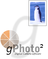
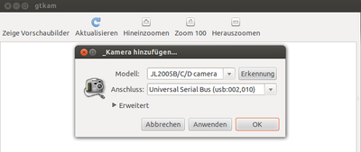
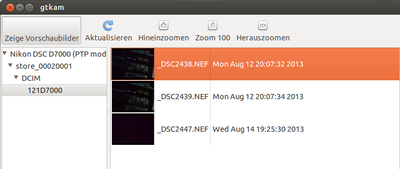
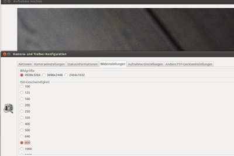

gtkam
Dieser Artikel wurde für die folgenden Ubuntu-Versionen getestet:
Ubuntu 16.04 Xenial Xerus
Ubuntu 14.04 Trusty Tahr
Zum Verständnis dieses Artikels sind folgende Seiten hilfreich:

Mit gPhoto  können Bilder von einer Kamera geholt bzw. auf die Kamera geschickt werden, auch wenn diese ausschließlich über das Picture Transfer Protocol (PTP) ansprechbar ist (üblich ist das direkte Einbinden in das Dateisystem als Massenspeichermedium). Daneben kann die Kamera vom Rechner aus gesteuert werden, falls dies vom Hersteller vorgesehen ist. Diese Art der Fernsteuerung wird im Englischen auch als Tethered Shooting bezeichnet.
können Bilder von einer Kamera geholt bzw. auf die Kamera geschickt werden, auch wenn diese ausschließlich über das Picture Transfer Protocol (PTP) ansprechbar ist (üblich ist das direkte Einbinden in das Dateisystem als Massenspeichermedium). Daneben kann die Kamera vom Rechner aus gesteuert werden, falls dies vom Hersteller vorgesehen ist. Diese Art der Fernsteuerung wird im Englischen auch als Tethered Shooting bezeichnet.
Allerdings ist das Programm ein reines Kommandozeilenprogramm – Beispiele sind im Artikel Kamera via PTP einbinden zu finden. Mit gtkam gibt es eine bequemer zu bedienende grafische Benutzeroberfläche. Gleichfalls vorgestellt wird eine passende Erweiterung für GIMP mit dem Namen gtkam-gimp.
Während gtkam noch auf GTK2 basiert und nicht mehr weiterentwickelt wird, stellt Entangle eine moderne grafische Alternative bereit, die ab Ubuntu 13.04 Bestandteil der offiziellen Paketquellen ist.
Installation¶
Die erforderlichen Pakete sind in den Quellen enthalten, sie müssen lediglich installiert [1] werden:
gtkam (universe)
gtkam-gimp (universe)
 mit apturl
mit apturl
Paketliste zum Kopieren:
sudo apt-get install gtkam gtkam-gimp
sudo aptitude install gtkam gtkam-gimp
Hinweis:
Falls mehr als ein Speicherkartenschacht in der Kamera zur Verfügung steht, darf nur 1 Speicherkarte ansprechbar sein
Eine eventuell automatisch eingebundene Kamera, z.B. durch das gThumb-Importwerkzeug, muss ausgehängt werden
Kamera wird nicht am Fokussieren gehindert oder steht auf "manuell"
gtkam¶

Anschließend kann das Programm gtkam gestartet werden [2].
 Es gibt die übliche Menüstruktur
Datei
Speichere Photos
Lösche Photos
Beenden
Ansicht mit den gleichen Funktionen wie in der Symbolleiste
Auswählen
Kamera
Aktualisieren
Kamera hinzufügen
Hilfe
Zusätzlich darunter eine Symbolleiste:
Zeige Vorschaubilder
Aktualisieren
Hineinzoomen
Zoom 1000
Herauszoomen
Im Anschluss muss als erstes eine Kamera eingerichtet werden unter "Kamera -> Kamera hinzufügen" mit Linksklick  auf "Erkennung". Alternativ kann man auch die Kamera aus einer nach Herstellern geordneten Liste auswählen.
auf "Erkennung". Alternativ kann man auch die Kamera aus einer nach Herstellern geordneten Liste auswählen.
Hat man sich im Verzeichnis auf der Kamera bis zu den Bildern heruntergeklickt (eventuell den Verzeichnisbaum durch Klick auf das "+" Zeichen erweitern), werden die Bilder als Dateivorschau angezeigt.
Jetzt kann man bestimmen, welche Details (Metadaten, z.B. Exif) gespeichert werden sollen und ob und mit welchem Programm die Datei gleich geöffnet werden soll.
GIMP mit gtkam¶
Nach erfolgreicher Installation gibt es unter "Datei -> Erstellen" zwei neue Menüeinträge in GIMP:
"Aufnahme von Kamera machen" und
"Lade von Kamera"

Aufnahme von Kamera machen¶
"Aufnahme machen" zeigt sofort das Kamerabild als Liveview an und bietet die Möglichkeit, die Bildansicht in 90° Schritten drehen. Nun kann man bei Bedarf Kameraeinstellungen beeinflussen sowie auslösen.
Im Grunde verhält sich gtkam in GIMP wie Cheese mit einer Webcam, nur entsprechend aufwendiger.
Laden von Kamera¶
"Laden von Kamera" verlangt zunächst die Erkennung der Kamera. Durch einen Linksklick auf "Erkennung" wird dieser Vorgang ausgelöst. Dann kann das gewünschte Verzeichnis ausgewählt und ein oder mehrere Bilder geladen werden.
Links¶
Verwenden von gtKam
 - openSUSE 9.3 Dokumentation
- openSUSE 9.3 Dokumentationgtkam: Standard ohne großen Luxus
- Artikel in PC-WeltGtKam for Digital Camera - Ubuntu 10.04
- Beispielvideo
- Erstellt mit Inyoka
-
 2004 – 2017 ubuntuusers.de • Einige Rechte vorbehalten
2004 – 2017 ubuntuusers.de • Einige Rechte vorbehalten
Lizenz • Kontakt • Datenschutz • Impressum • Serverstatus -
Serverhousing gespendet von